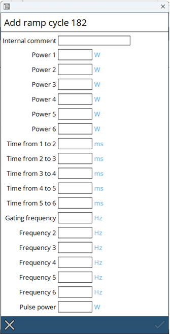

Ciclos de rampa
Para penetraciones de calidad, los ciclos de rampa láser se utilizan para controlar la potencia del láser durante el proceso de penetración. En el modo rampa, se puede crear un orificio inicial para el corte por láser con un impacto mínimo. Para ello, la potencia del láser y la frecuencia de pulso se controlan a través de un intervalo programado. Este proceso de penetración evita daños en la óptica de enfoque y garantiza que no se produzca una combustión incontrolada del material.

La rampa solo se mostrará gráficamente en la interfaz de usuario durante un máximo de 100 segundos. Sin embargo, las rampas más largas seguirán funcionando según lo definido. La potencia del láser, los tiempos y la frecuencia de pulso deben ajustarse para el tipo y el espesor del material.

Seleccione un ciclo de rampa que permita la edición. Los números mayores de 180 son editables. Es necesario introducir un comentario interno, de lo contrario no se puede guardar.
-
El comentario interno debe dar una descripción clara de la intención del ciclo.
-
La potencia del láser durante el proceso de penetración es controlada por el ciclo de rampa.
-
El tiempo es la duración del ciclo de rampa.
-
La frecuencia de pulso en un ciclo de rampa ajusta la temporización de pulsos.
-
Frecuencia es la frecuencia base de los pulsos láser.
-
La potencia de pulso en un ciclo de rampa modula la intensidad del pulso.